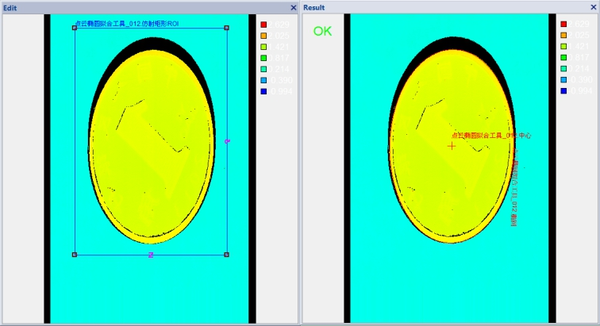
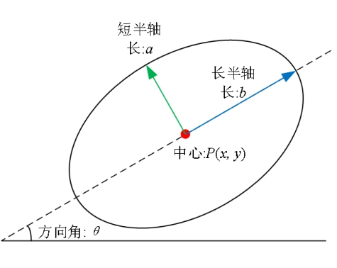

在3D测量中，点云椭圆拟合工具是获取 XY 平面中样件形状的拟合椭圆，得到椭圆中心、长轴、短轴长度以及方向角等信息，以协助进行后续其他操作，如图1所示为一个ROI区域内满足深度限制的椭圆拟合结果。

| 分类 | 参数名称 | 参数描述 |
|---|---|---|
| 属性窗口 | 启用仿射矩形ROI | 选择“是”，则使用仿射矩形ROI检测区域，否则全图检测。 |
| 启用深度限制 | 选择“是”，则显示深度阈值参数。 | |
| 深度阈值 | 椭圆拟合过程中对深度数据的深度约束条件，即将排除Z反向小于该深度阈值的深度数据。该约束为可选约束，仅在启用深度限制为是时有效。 |
|
| 图像窗口 | 深度图像 | 显示待检测的深度图像，显示为伪彩色图像。 |
| 检测区域 | 属性窗口启用仿射矩形ROI参数为是时，在图像上显示ROI区域。 | |
| 数据链 | 输入深度图像 | 输入待检测的深度图像。 |
| 二维线性变换 | 目标相对于模板的平移、旋转、缩放变换。 | |
| 高级界面 | 无 | 无 |
| 分类 | 参数名称 | 参数描述 |
|---|---|---|
| 监视窗口 | 输入深度图像 | 输入图像的长宽和像素大小，以及深度数据参数。 |
| 中心坐标 | 椭圆的中心坐标。 |
|
| 长轴 | 椭圆的长轴长度。 | |
| 短轴 | 椭圆的短轴长度。 | |
| 长短轴比 | XY平面内样件区域的拟合椭圆的短轴与长轴之比。 | |
| 方向 | 椭圆长轴与X轴的夹角，其中方向角的正负分别表示按顺时针或逆时针旋转。 | |
| RMS误差 | 椭圆的拟合误差。 | |
| 执行结果 | 工具执行结果。 | |
| 执行时间 | 工具执行时间。 | |
| 图像窗口 | 输入深度图像 | 显示检测的深度图像，显示为伪彩色图像。 |
| 椭圆 | 显示椭圆拟合结果及其中心。 | |
| 数据链 | 同监视窗口参数，供后续工具使用。 |
Step 1 设置检测区域
默认情况下，点云椭圆拟合执行的是全图拟合，为了提高效率和精度，用户可以设置合适的仿射矩形ROI区域。
Step 2 设置深度限制可选参数
在需要更高拟合精度时，用户可根据需求设置适当的深度阈值，以排除干扰数据。
Step 3 执行拟合和输出结果
在设置好参数后就可以执行点云椭圆拟合，输出的结果包括：中心坐标、长短轴长度、方向角（如图2所示），以及RMS误差等。

参数调整建议与说明
| 序号 | 参数 | 应用场景 | 调整建议与说明 |
|---|---|---|---|
| 1 | 深度阈值 | 复杂背景图像/深度阈值上，检测外形类似圆的目标 | (1) 通过恰当的深度约束，可排除深度不符合需求的数据点，提高拟合效率和准确性； (2) 深度限制不宜过大，否则不能起到深度约束作用； |
无
参见“\Samples\3D\深度图\3D测量工具.gvp”。